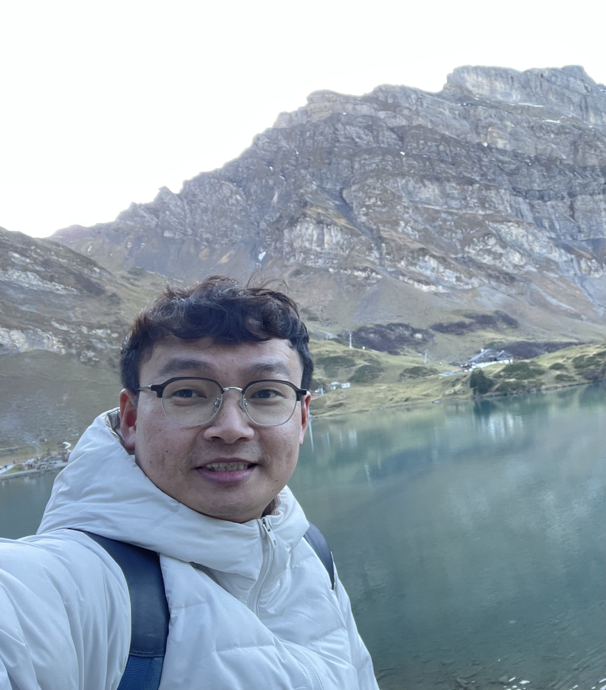

Do Van Minh
Research Engineer @ SMART
Computer Vision · Robot Perception · Embodied AI
Building intelligent systems that perceive, reconstruct, understand, and interact with the physical world.
I am currently a Research Engineer at the Singapore-MIT Alliance for Research and Technology (SMART), a research center of the Massachusetts Institute of Technology (MIT) in Singapore. I work under the supervision of Professor Sanjay Sarma and Professor Archan Misra on the M3S project.
Prior to joining SMART, I worked as a Research Associate at Nanyang Technological University (NTU), where I focused on computer vision, autonomous systems, and embedded AI under Professor Siew-Kei Lam. I also earned a Master of Engineering in Computer Science from NTU, where my dissertation addressed multi-camera tracking for smart urban mobility.
Interested in doing research in Computer Vision, Robot Perception, or Embodied AI?
I welcome motivated students to reach out about research opportunities.
vmdo@mit.edu ·
LinkedIn
Research
My research focuses on Computer Vision, Robot Perception, and Embodied AI. I am interested in building intelligent systems that can perceive and reconstruct the physical world, understand human-object interactions, and translate this understanding into reliable robot actions.
My current research spans visual perception and grounding, 3D geometric perception, interaction understanding and robot learning, industrial visual perception and inspection, and industrial simulation and benchmarking.
Featured Research Directions
{% include projects.html projects=site.data.research show_research_demos=true %}Work Experience
Singapore-MIT Alliance for Research and Technology (SMART)
2024 – Present
AI · Computer Vision · Robotics · Embodied AI
Nanyang Technological University (NTU)
2016 – 2024
Computer Vision · Autonomous Systems · Embedded AI · Intelligent Transportation
Best Poster/Demo Award — ICCPS 2024
Achieving Real-time Visual Tracking with Low-Cost Edge AI
Education
Nanyang Technological University (NTU), Singapore
2021–2023
GPA: 4.5/5.0
Thesis: Multi-Camera Tracking for Smart Urban Mobility
Danang University of Science and Technology, Vietnam
2011–2016
Graduated with Distinction
GE Foundation Scholar-Leaders 2012 — one of 10 recipients selected nationwide
First Prize — Texas Instruments MCU Design Contest (Central Vietnam), 2015
Third Prize — DUT Student Research Competition, 2016
Thesis: Robotic Arm Design for People with Arm Disabilities Using Head Gestures and Eyebrow Movements
Selected Previous Projects
{% assign recent_projects = site.data.projects | slice: 0, 4 %} {% assign earlier_projects = site.data.projects | slice: 4, site.data.projects.size %} {% assign slam = site.data.workexp | where: "id", "cudo" %} {% assign previous_projects = recent_projects | concat: slam | concat: earlier_projects | where_exp: "project", "project.name != 'Shoplifting Behavior Detection'" %} {% assign selected_projects = previous_projects | slice: 0, 5 %} {% include projects.html projects=selected_projects homepage_previous=true %}